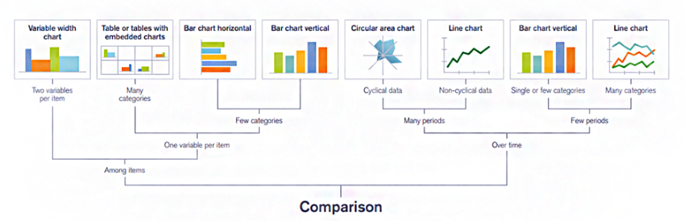
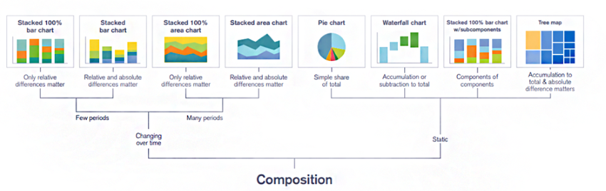
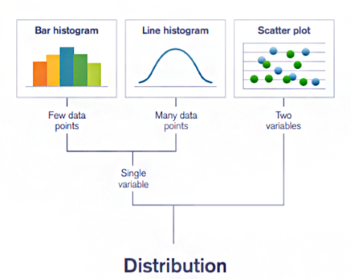
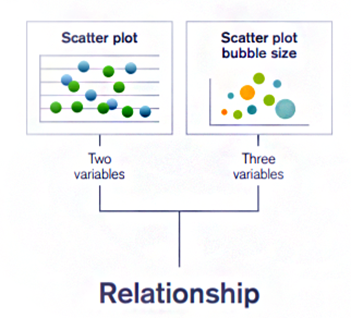
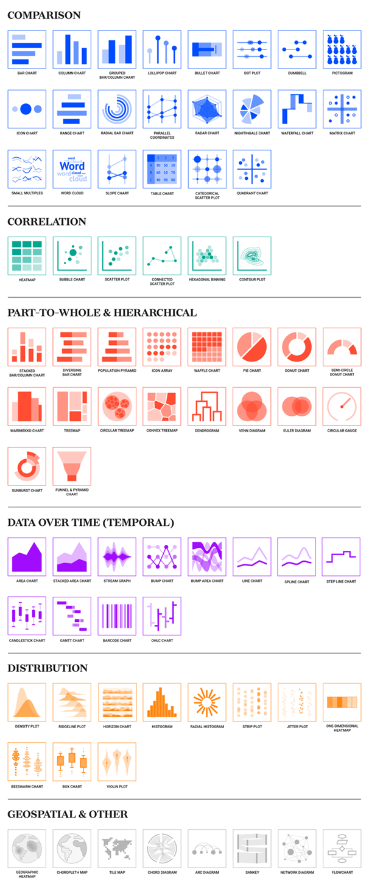

Chart types
Choosing an appropriate chart type
Choosing the right chart type is important to make sure the user can understand the data quickly and efficiently. What chart type you choose often depends on what you need the chart to show.
Check our tables guidance for advice about choosing between a table or a chart, table alternatives and best practice.
This guidance will cover 4 chart type categories:
- comparison charts
- composition charts
- relationship charts
- distribution charts
Answer these 4 questions to help you decide which type of chart to use:
- Do you want to compare values or show differences over time?
- Do you want to display composition of something?
- Do you want to better understand the relationship between 2 or more variables?
- Do you want to show the distribution of your data?
Source - choosing the right chart
Comparison visualisations
Use comparison visualisations to compare 2 or more variables or values over a period of time.
Comparison visualisation examples and when they are appropriate
For comparison visualisations among items, use a:
- variable width chart for 2 variables per item
- table or tables with embedded charts for one variable per item with many categories
- horizontal bar chart for one variable per item with few categories
- vertical bar chart for one variable per item with few categories
For comparison visualisations over time, use a:
- circular area chart for many periods and cyclical data
- line chart for many periods and non-cyclical data
- vertical bar chart for few periods and single or few categories
- line chart for few periods and many categories
How many categories to compare
Do not try to compare more than 4 categories. Using 4 categories is best practice for data visualisation and more than 4 categories can make a chart too cluttered.
Think about combining multiple categories or focusing your chart on a single entity if you can.
Source - chart colours

Chart types for comparison visualisation
Line charts
If you’re using a line chart, you need to:
- label the lines instead of using a legend
- use an NHS Blue (#005EB8) colour for a single line including sparklines
- use our colour guidance for more than one variable
- use NHS Blue (#005EB8) against NHS Grey 3 (#AEB7BD) for multiple lines when you need to pull focus onto one of the lines
Bar charts
If you’re using a bar chart, you need to:
- make sure your data is ordered appropriately, for example, from A to Z or high to low
- leave small gaps between the bars
- use NHS Blue (#005EB8) for bars that do not need groupings – otherwise use the colour guidance for multiple groupings across bars
- follow the NHS Colour guidance to make sure the order of colours you use is distinct
- use NHS Blue (#005EB8) against NHS Grey 3 (#AEB7BD) for multiple bars when you need to pull focus onto one of the bars
If you’re using a clustered bar chart, you need to:
- make sure the order and orientation of the bar chart legends match how the categories are presented and state this before the chart or label the bars in the first cluster directly
- leave small gaps between the bars in the clusters
- give all bars an NHS Blue (#005EB8) outline
If you’re using a stacked bar chart, you need to:
- make sure the order and orientation of bar chart legends match how categories are presented
- state the bar legend before the chart
Composition visualisations
Use composition visualisations to compare parts to a whole. For example, percentage figures out of 100%.
These charts can be changing over time or static. If they are static, you need to mention the timeframe that the data relates to.
Composition visualisation examples and when they are appropriate
For charts that are changing over time, use a:
- stacked 100% bar chart for few periods when only relative differences matter
- stacked bar chart for few periods when relative and absolute differences matter
- stacked 100% area chart for many periods when only relative differences matter
- stacked area chart for many periods when relative and absolute differences matter
For charts that are static, use a:
- pie chart for a simple share of a total
- waterfall chart for an accumulation or subtraction to a total
- stacked 100% bar chart with sub-components for components of components
- tree map for an accumulation to total when absolute difference matters

Chart types for composition visualisations
Stacked bar charts
If you’re using a stacked bar chart, you need to:
- make sure the order and orientation of bar chart legends match how categories are presented and state this before the chart
- follow the NHS Colour guidance to make sure the order of colours you use is distinct
You should avoid stacked bar charts when categories have negative values. Negative values can be hard to understand in stacked bar charts.
Source - chart accessibility
Pie charts
Use piue charts to show part to whole comparisons.
If you’re using a pie chart, you need to:
- follow the NHS Colour guidance to make sure the order of colours you use is distinct
- label the segments directly
- follow our pie and doughnut charts guidance
Source - chart accessibility
Distribution visualisations
Distribution visualisations are useful for ordering data from lowest to highest. You can analyse the distribution and use it for trend analysis to gain meaningful insights.
Distribution visualisation examples and when they are appropriate
Use a:
- bar histogram for single variables and few data points
- line histogram for single variables and many data points
- scatter plot for 2 variables

Scatter charts
If you’re using a scatter chart, you need to:
- use 4 or fewer categories for comparison
- use visual encoding like symbols or size where necessary and make what you have used clear to the user – check our guidance on visual encoding for more detail
- make sure a legend is available
Relationship visualisations
Use relationship visualisations to highlight a relationship or correlation between variables. You can use multiple variables and visual encoding practices to add more details, for example, using symbols on a scatter chart to show multiple groupings.
Check our guidance on visual encoding for more detail.
Relationship visualisation examples and when they are appropriate
Use a:
- scatter plot for 2 variables
- scatter plot bubble size for 3 variables

Geospatial visualisations
Use geospatial visualisations to show distribution across a set parameter, for example, a map.
Common geospatial visualisations include:
- geographic heatmaps
- choropleth maps
- title maps
Infographics
Infographics are not a type of visualisation themselves, but they can use many visualisation methods to tell a story and pull focus to a user.
Infographics are not always accurate and can often be simplified, so you need to be mindful of any assumptions or biases infographics can cause.
If you’re using an infographic, you need to:
- start with a story
- make sure your infographic is not misleading
- keep the infographic clear and short
- use colour to show meaning, for example NHS blue, or green for the environment
- make sure decimal places are accurate if you’re using statistics
Do not overwhelm the user with too many infographics.
Source - infographics best practice
Chart examples
Here are some more examples of charts you can use.
Charts to show comparison
To show comparison, you can use a:
- stacked bar or column chart
- diverging bar chart
- population pyramid
- icon array
- waffle chart
- pie chart
- donut chart
- semi-circle donut chart
- Marimekko chart
- treemap
- circular treemap
- convex treemap
- dendrogram
- venn diagram
- euler diagram
- circular gauge
- sunburst chart
- funnel and pyramid chart
Charts to show data over time
These are also called temporal charts.
To show data over time, you can use a:
- stream graph
- area chart
- stacked area chart
- bump chart
- bump area chart
- line chart
- spline chart
- step line chart
- candlestick chart
- Gantt chart
- barcode chart
- Open-High-Low-Close (OHLC) chart
Charts to show distribution
To show distribution, you can use a:
- density plot
- ridgeline plot
- horizon chart
- histogram
- radial histogram
- strip plot
- jitter plot
- one-dimensional heatmap
- bee-swarm chart
- box chart
- violin plot
Geospatial and other charts
Other charts you can use include:
- geographic heatmaps
- choropleth maps
- title maps
- chord diagrams
- arc diagrams
- Sankey diagrams
- network diagrams
- flowcharts

Improve the playbook
If you spot anything factually incorrect with this page or have ideas for improvement, please share your suggestions.
Before you start, you will need a GitHub account. Github is an open forum where we collect feedback.
Published:
Last reviewed:
Next review due: